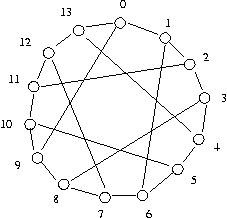

The Heawood graph
Symmetric cubic cage graph
Kernel equation system solution space symmetries, conjecture on kernel numbers, clustering
The Heawood graph is a famous cubic graph of order 14, size 42 (fill rate 23%) with girth 6. It is constructed on 14 nodes with alternating circulants {-1,1,5} and {-5, -1,1} .
The Heawood graph supports 37 different labelled kernels, among them obviously the two maximal sets of either odd or even numbered nodes of cardinality 7. Indeed the chords in the 14 nodes cycle are all connecting an even node to an odd node.
Following the conjecture on the unlabelled kernel number of a symmetric (arc-transitive) graph, we should however find anough symmetry in the Heawood graph such that the symmetry congruence classes induced on the kernel equation system solution space is less or equal 14, i.e. the order of the graph.
Indeed, the kernel number of the Heawood graph is 3.
The nauty program, a software package for computing the automorhism group of a graph, reveals us that the Heawood graph supports four automorphic actions (the nodes are enumerated from 0 to 13):
The four generators of the Heawood automorphism group map on the kernel equation system solution space 3 disjoint orbits with the following representatively labelled choices:
| # | Labelled choice | Choice cardinality | Orbit cardinality |
|---|---|---|---|
| 1 | [0, 3, 6, 11] | 4 | 21 |
| 2 | [1, 3, 7, 10, 13] | 5 | 14 |
| 3 | [0, 2, 4, 6, 8, 10, 12] | 7 | 2 |